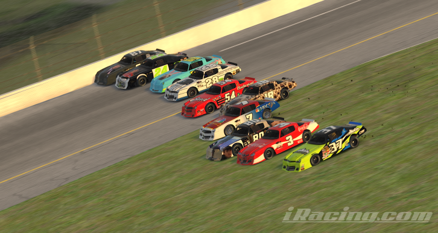

The Ballad of Playboi Carti Racing
Amidst a devastating financial crisis nearly 4 years ago, the famed Playboi Carti Racing were forced to shut down their widly successful street stock program, after Honda Engines decided to end their relationship with the multiple street stock winning team and its drivers, Eli Commerford, Kelan Belsha and Charlie Baier.
